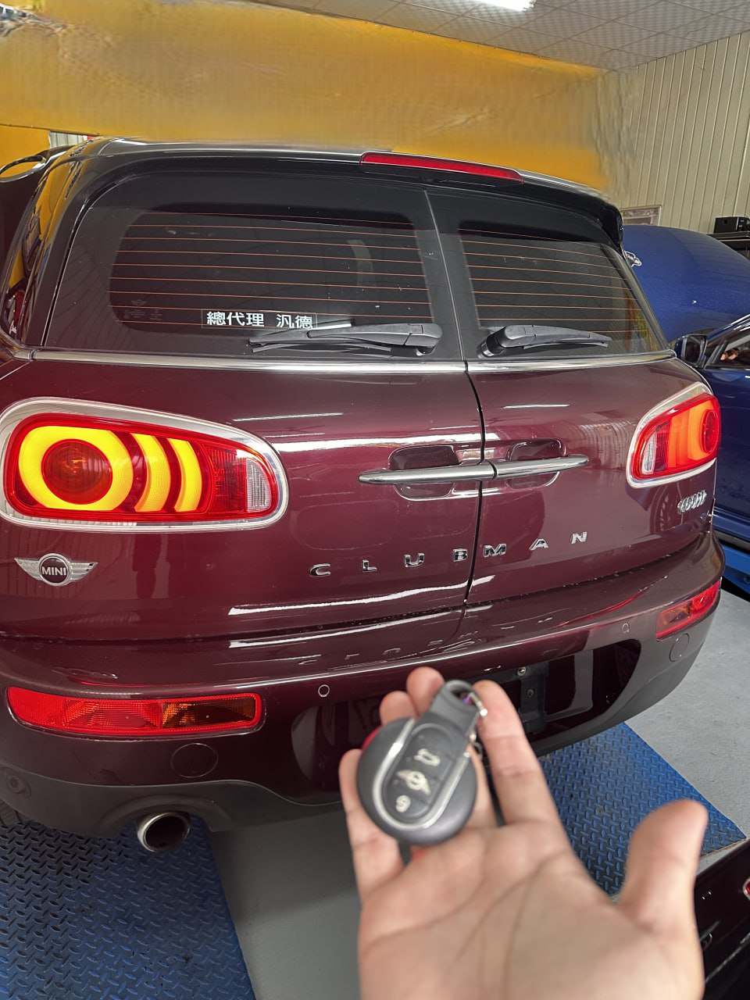

現場實拍：彰化北斗 Mini Clubman 鑰匙全丟，現場數據解碼配製完成
英倫經典的數據挑戰：Mini Clubman 晶片鑰匙配製
在彰化北斗的清晨，一位 Mini Clubman 車主因鑰匙全數遺失而無法發動愛車。Mini 車系的防盜系統精密，尤其是 CAS 或 BDC 模組的數據存取，若無專業設備與深厚技術，往往需要拆卸大量零件甚至拖回原廠等待數週。
極致核心：24H 全台救援數據解碼
極致核心接獲通知後，立即派遣工程師攜帶高階解碼設備趕赴北斗。我們直接在現場透過 OBD 診斷插口讀取車輛防盜模組數據，免拆卸、免破壞線路，在短時間內精準計算出金屬齒位與晶片密碼，現場配製出兩把全新感應鑰匙，並成功遙控與啟動。
現場數據解碼
高階設備直接讀取底層數據，確保 100% 匹配成功率。
彰化快速服務
北斗、溪州、埤頭地區 24H 快速響應，現場約 1 小時完工。